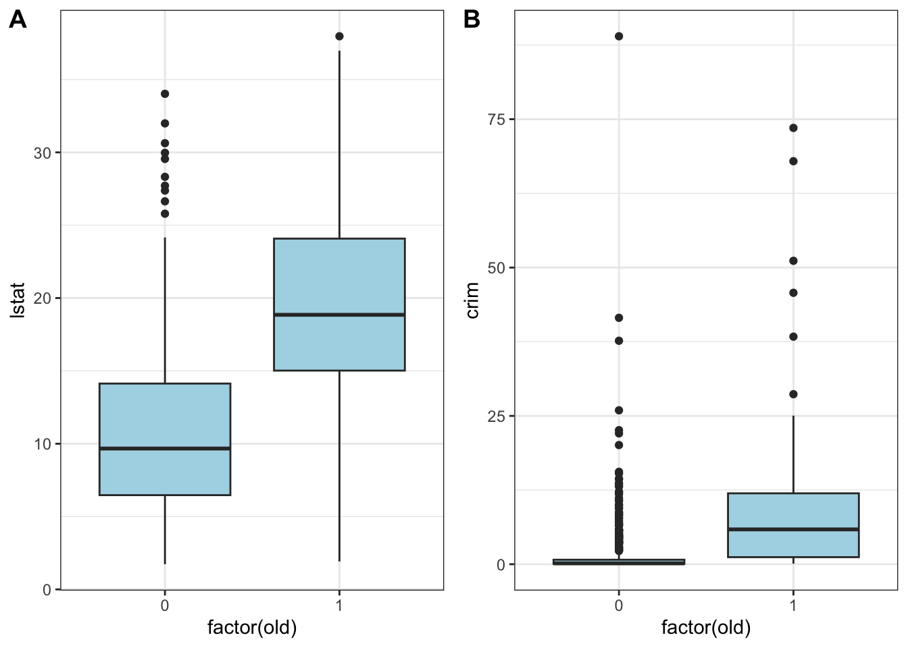
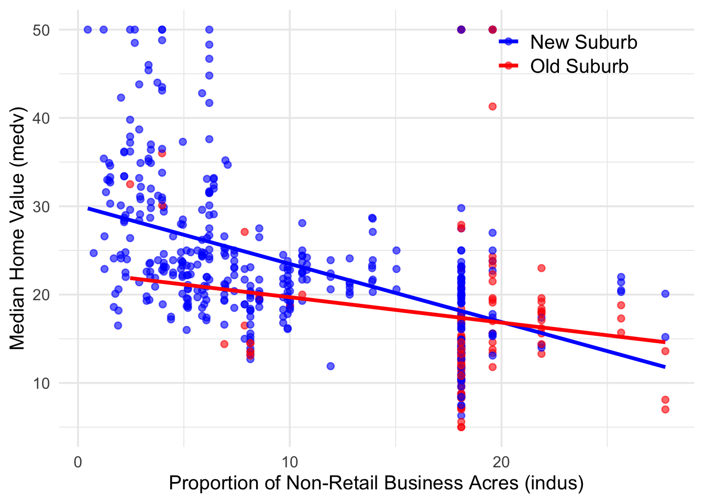

# load packages and dataset
pkgs <- c("tidyverse", "MASS", "data.table", "stargazer", "cowplot")
missing <- setdiff(pkgs, rownames(installed.packages()))
if (length(missing) > 0) install.packages(missing)
invisible(lapply(pkgs, function(pkg) suppressPackageStartupMessages(library(pkg, character.only = TRUE))))
data(Boston) # Boston housing dataInteractions of Binary Variables
For this section of the course, we will be working with the Boston dataset, which contains 506 observations on housing values in various suburbs of Boston. This dataset provides detailed information on factors such as crime rates, property age, locations (proximity to the Charles River), and other socioeconomic variables.
We will use this data to explore and analyze the determinants of housing prices, applying regression techniques to understand how different factors influence the value of homes.
Use ?Boston to see the description of the dataset.
Here are some variables in the dataset which we are going to use in this session.
| Variables | Definitions |
|---|---|
medv |
median value of owner-occupied homes in $1000s. |
lstat |
the percentage of individuals with low socioeconomic status |
indus |
proportion of non-retail business acres per town; industrial, office, or commercial land not directly serving consumers. |
age |
proportion of owner-occupied units built prior to 1940. |
crim |
per capita crime rate by town. |
chas |
A dummy variable. Takes the value 1 if the Charles River (a short river in the proximity of Boston) passes through the suburb and is 0 otherwise. |
1 Interactions of Two Binary Variables
Consider the following regression model
\[ medv_i = \beta_0 + \beta_1\, chas_i + \beta_2\, old_i + \beta_3\, (chas_i \times old_i) + u_i \tag{1}\]
where \(chas_i\) and \(old_i\) are dummy variables defined as follows:
\[ \begin{aligned} chas_i &= \begin{cases} 1 & \text{if the suburb is next to the Charles River} \\ 0 & \text{otherwise} \end{cases} \\ old_i &= \begin{cases} 1 & \text{if } age_i \ge 95 \\ 0 & \text{otherwise} \end{cases} \end{aligned} \]
where \(agi_i\) being the proportion of owner-occupied units built prior to 1940.
Instructions:
- Generate and append the binary variable \(old\) to the dataset Boston.
- Conduct the regression stated above and assign the result to
mod_bb. - Obtain a robust coefficient summary of the model. How do you interpret the results?
Boston <- Boston %>%
mutate(old = ifelse(age >= 95, 1, 0))
mod_bb <- lm(medv ~ chas*old, data = Boston)
summary(mod_bb)
Call:
lm(formula = medv ~ chas * old, data = Boston)
Residuals:
Min 1Q Median 3Q Max
-17.771 -4.765 -1.683 2.776 33.433
Coefficients:
Estimate Std. Error t value Pr(>|t|)
(Intercept) 23.6989 0.4503 52.624 < 2e-16 ***
chas 4.0582 1.6872 2.405 0.0165 *
old -7.1319 0.9493 -7.513 2.67e-13 ***
chas:old 10.5462 3.7577 2.807 0.0052 **
---
Signif. codes: 0 '***' 0.001 '**' 0.01 '*' 0.05 '.' 0.1 ' ' 1
Residual standard error: 8.604 on 502 degrees of freedom
Multiple R-squared: 0.1301, Adjusted R-squared: 0.1249
F-statistic: 25.02 on 3 and 502 DF, p-value: 4.244e-15The estimated regression model is given by
\[ \widehat{medv}_i = 23.70 + 4.06\, chas_i - 7.13\, old_i + 10.55\, (chas_i \times old_i) \]
Interpretation of the coefficients
We start with listing all possible combinations of the binary variables \(chas_i\) and \(old_i\).
| Scenario | \(chas_i\) | \(old_i\) | Interpretation |
|---|---|---|---|
| 1 | 0 | 0 | Suburb not next to Charles River and new |
| 2 | 0 | 1 | Suburb not next to Charles River and old |
| 3 | 1 | 0 | Suburb next to Charles River and new |
| 4 | 1 | 1 | Suburb next to Charles River and old |
Based on the estimated regression model, we can compute the expected value of medv for each of the four groups.
| Scenario | \(chas_i\) | \(old_i\) | \(chas_i \times old_i\) | Expected value of medv |
|---|---|---|---|---|
| 1 | 0 | 0 | 0 | \(\color{#0099FF}{\hat{\beta}_0} = 23.70\) |
| 2 | 0 | 1 | 0 | \({\color{#0099FF}\hat{\beta}_0} + {\color{#00CC66}\hat{\beta}_2} = {\color{#0099FF}23.70} + {\color{#00CC66}(- 7.13)} = 16.57\) |
| 3 | 1 | 0 | 0 | \({\color{#0099FF}\hat{\beta}_0} + {\color{#fb5b89}\hat{\beta}_1} = {\color{#0099FF}23.70} + {\color{#fb5b89}4.06} = 27.76\) |
| 4 | 1 | 1 | 1 | \({\color{#0099FF}\hat{\beta}_0} + {\color{#fb5b89}\hat{\beta}_1} + {\color{#00CC66}\hat{\beta}_2} + {\color{orange}\hat{\beta}_3} = {\color{#0099FF}23.70} + {\color{#fb5b89}4.06} + {\color{#00CC66}(-7.13)} + {\color{orange}(10.55)} = 31.18\) |
From the table above, we can interpret the coefficients as follows:
\(\color{#0099FF}{\hat{\beta}_0} = 23.70\) is the expected value of
medvfor suburbs that are not next to the Charles River and are new (i.e.,old = 0).Comparing scenario 2 with 1: \(\color{#00CC66}{\hat{\beta}_2} = -7.13\) is the difference in expected value of
medvbetween new and old suburbs that are NOT next to the Charles River.In other words, old suburbs that are not next to the Charles River have an expected
medvthat is 7.13 lower than new suburbs that are NOT next to the Charles River.Comparing scenario 3 with 1: \(\color{#fb5b89}{\hat{\beta}_1} = 4.06\) is the difference in expected value of
medvbetween suburbs that are next to the Charles River and those that are not, among new suburbs (i.e.,old = 0).In other words, new suburbs that are next to the Charles River have an expected
medvthat is 4.06 higher than new suburbs that are not next to the Charles River.\(\color{orange}{\hat{\beta}_3} = 10.55\) has two interpretations:
If we compare scenario 4 with scenario 2, the difference in expected value of
medvis given by \({\color{#fb5b89}\hat{\beta}_1} + {\color{orange}\hat{\beta}_3} = 4.06 + 10.55 = 14.61.\)This means that old suburbs that are next to the Charles River have an expected
medvthat is 14.61 higher than old suburbs that are not next to the Charles River.→ \(\color{orange}{\hat{\beta}_3}\) can be interpreted as the difference in the effect of being next to the Charles River between old and new suburbs.
If we compare scenario 4 with scenario 3, the difference in expected value of
medvis given by \({\color{#00CC66}\hat{\beta}_2} + {\color{orange}\hat{\beta}_3} = -7.13 + 10.55 = 3.42.\)This means that old suburbs that are next to the Charles River have an expected
medvthat is 3.42 higher than new suburbs that are next to the Charles River.→ \(\color{orange}{\hat{\beta}_3}\) can be interpreted as the difference in the effect of being old between suburbs that are next to the Charles River and those that are not.
Tip
Controlling for changes in the interacting variables is essential when interpreting the coefficient of interaction terms.
A common approach is to substitute specific values for the interacting variables and compute the expected value of the dependent variable under different scenarios. This allows for a clearer interpretation of the coefficients by comparing how the expected value of the dependent variable varies across these scenarios.
1.1 Add More Controls Variables
We can also add more control variables to Equation 1 to improve the model fit (Adjusted \(R^2 = 12\%\) as of now). For example, we can add lstat and crim as additional control variables.
\[ medv_i = \beta_0 + \beta_1\, chas_i + \beta_2\, old_i + \beta_3\, (chas_i \times old_i) + \beta_4\, lstat_i + \beta_5\, crim_i + u_i \tag{2}\]
We estimate the above regression model as follows.
mod_bb2 <- lm(medv ~ chas * old + lstat + crim, data = Boston)
# reorder the variables for stargazer output
vars.order <- c("chas", "old", "chas:old", "lstat", "crim")
stargazer(mod_bb, mod_bb2,
type = "text",
column.labels = c("Restricted", "Unrestricted"),
order = paste0("^", vars.order, "$")
)
====================================================================
Dependent variable:
------------------------------------------------
medv
Restricted Unrestricted
(1) (2)
--------------------------------------------------------------------
chas 4.058** 4.000***
(1.687) (1.183)
old -7.132*** 1.748**
(0.949) (0.776)
chas:old 10.546*** 4.008
(3.758) (2.651)
lstat -0.949***
(0.046)
crim -0.079**
(0.036)
Constant 23.699*** 34.106***
(0.450) (0.573)
--------------------------------------------------------------------
Observations 506 506
R2 0.130 0.574
Adjusted R2 0.125 0.570
Residual Std. Error 8.604 (df = 502) 6.033 (df = 500)
F Statistic 25.017*** (df = 3; 502) 134.705*** (df = 5; 500)
====================================================================
Note: *p<0.1; **p<0.05; ***p<0.01Comparing the two models:
- The coefficient of
oldreversed signs, from negative (\(-7.13\)) to positive (\(1.75\)), suggesting that after accounting for crime and low socioeconomic status, older suburbs have slightly higher values. - Negative coefficients for
lstat(\(-0.95\)) andcrim(\(-0.079\)) indicate that higher poverty and crime reduce house values.
Plot lstat and crim group by old to see how the distribution of these two variables differ between new and old suburbs.
p1 <- ggplot(Boston, aes(x = factor(old), y = lstat)) +
geom_boxplot(fill = "lightblue")
p2 <- ggplot(Boston, aes(x = factor(old), y = crim)) +
geom_boxplot(fill = "lightblue")
plot_grid(p1, p2, labels = c("A", "B"), ncol = 2)
We see that old suburbs tend to have higher lstat and crim values compared to new suburbs. This suggests that controlling for these variables is important when examining the relationship between medv, chas, and old.
1.2 Two-Way ANOVA Mathematical Formulation
We now conduct a two-way ANOVA to formally compare the two models mod_bb and mod_bb2.
anova(mod_bb, mod_bb2)Analysis of Variance Table
Model 1: medv ~ chas * old
Model 2: medv ~ chas * old + lstat + crim
Res.Df RSS Df Sum of Sq F Pr(>F)
1 502 37161
2 500 18200 2 18961 260.45 < 2.2e-16 ***
---
Signif. codes: 0 '***' 0.001 '**' 0.01 '*' 0.05 '.' 0.1 ' ' 1State the null and alternative hypotheses. \[ \begin{aligned} H_0 &: \beta_4 = 0 \text{ and } \beta_5 = 0 \\ H_1 &: \beta_4 \ne 0 \text{ or } \beta_5 \ne 0 \end{aligned} \]
In plain language:
- \(H_0\): The additional variables
lstatandcrimdo not improve the model fit. - \(H_1\): At least one of the additional variables
lstatorcrimimproves the model fit.
- \(H_0\): The additional variables
Calculate the F-statistic.
The F-statistic is based on the \(R^2\) of the two regressions: \[ F = \left(\frac{n - k_U -1}{p}\right) \left(\frac{R_U^2-R_R^2}{1-R_U^2}\right) \sim F(p, n-k_U-1) . \]
where
- \(n = 506\) is the number of observations;
- \(k_U = 5\) is the number of predictors in the unrestricted model (where \(H_1\) is allowed to be true), excluding the intercept;
- \(p = 2\) is the number of restrictions (i.e., the number of additional variables in the unrestricted model);
- \(R_U^2 = 0.574\) is the \(R^2\) of the unrestricted model;
- \(R_R^2 = 0.130\) is the \(R^2\) of the restricted model.
Plug in the numbers, we get \[ F = \left(\frac{506-5-1}{2}\right) \left(\frac{0.574-0.130}{1-0.574}\right) = 260.56 \]
Find the critical value
The F-statistic follows an \(F(2, 502)\) distribution under the null hypothesis. At 5% significance level, we use the the critical value \(F_{2,\infty}=3.00.\)
Decision rule.
Since the calculated F-statistic (\(260.56\)) is much larger than the critical value (\(3.00\)), we reject the null hypothesis.
This suggests that at least one of
lstatandcrimsignificantly improves the model fit.Conclusion.
We conclude that model (2) with additional control variables
lstatandcrimprovides a significantly better fit to the data compared to model (1) without these controls.
2 Interactions of a Binary Variable and a Continuous Variable
An interaction between a binary variable and a continuous variable shows how the effect of the continuous variable changes depending on the group. This helps us see differences that a simple line wouldn’t capture. For example, the effect of business area on house prices might be different in new versus old suburbs.
Now consider the regression model
\[ medv_i = \beta_0 + \beta_1 \times indus_i + \beta_2 \times old_i + \beta_3 \times (indus_i\times old_i) + u_i \]
where \(indus_i\) being the proportion of non-retail business acres in suburb \(i\); \(old_i\) is the same binary variable as defined above, indicating if the suburb is new.
Instructions:
- Estimate the above regression model and assign the result to
mod_bc. - What is the relationship between
medvandindusfor new suburbs? What about old suburbs? - Is the effect of
indusonmedvstatistically different between new and old suburbs? - Plot
medvagainstindusand add the regression lines for both states of the binary variableold.
mod_bc <- lm(medv ~ indus * old, data = Boston)
summary(mod_bc)
Call:
lm(formula = medv ~ indus * old, data = Boston)
Residuals:
Min 1Q Median 3Q Max
-12.379 -5.066 -1.588 3.015 33.046
Coefficients:
Estimate Std. Error t value Pr(>|t|)
(Intercept) 30.06350 0.72882 41.250 <2e-16 ***
indus -0.65844 0.06569 -10.024 <2e-16 ***
old -7.48438 3.07918 -2.431 0.0154 *
indus:old 0.37115 0.17558 2.114 0.0350 *
---
Signif. codes: 0 '***' 0.001 '**' 0.01 '*' 0.05 '.' 0.1 ' ' 1
Residual standard error: 8.024 on 502 degrees of freedom
Multiple R-squared: 0.2434, Adjusted R-squared: 0.2389
F-statistic: 53.83 on 3 and 502 DF, p-value: < 2.2e-16The estimated regression model is given by
\[ \widehat{medv}_i = 30.06 - 0.66 \times indus_i - 7.48 \times old_i + 0.37 \times (indus_i \cdot old_i) \]
Interpretation of the coefficients
For new suburbs (i.e.,
old = 0), the relationship betweenmedvandindusis given by\[ E(medv_i | old_i = 0) = \hat{\beta}_0 + \hat{\beta}_1 \times indus_i = 30.06 - 0.66 \times indus_i \]
Thus, for new suburbs, a one-unit increase in
indusis associated with a decrease in the expected value ofmedvby 0.66.For old suburbs (i.e.,
old = 1), the relationship betweenmedvandindusis given by\[ \begin{split} E(medv_i | old_i = 1) &= (\hat{\beta}_0 + \hat{\beta}_2) + (\hat{\beta}_1 + \hat{\beta}_3) \times indus_i \\ &= (30.06 - 7.48) + (-0.66 + 0.37) \times indus_i \\ &= 22.58 - 0.29 \times indus_i \end{split} \]
Thus, for old suburbs, a one-unit increase in
indusis associated with a decrease in the expected value ofmedvby 0.29. The negative effect is smaller in old suburbs due to the positive interaction term (\(\hat{\beta}_3 = 0.37\)).The effect of
indusonmedvis statistically different between new and old suburbs at 5% significance level given that the coefficient of the interaction term (\(\hat{\beta}_3\)) is statistically significant.
Visualization
Now we plot medv against indus with regression lines for both states of the binary variable old.
ggplot(Boston, aes(x = indus, y = medv, color = factor(old))) +
geom_point(alpha = 0.6) +
geom_smooth(method = "lm", formula = y ~ x, se = FALSE) +
labs(
x = "Proportion of Non-Retail Business Acres (indus)",
y = "Median Home Value (medv)",
color = "Old Suburb (old)"
) +
scale_color_manual(values = c("0" = "blue", "1" = "red"), labels = c("New Suburb", "Old Suburb")) +
theme_minimal(base_size = 14) +
theme(
legend.title = element_blank(),
legend.text = element_text(size = 14),
legend.position = c(0.8, 0.9)
)
We see that the slope of the regression line for new suburbs (blue) is steeper than that for old suburbs (red), indicating a stronger negative relationship between medv and indus in new suburbs compared to old suburbs. This visual representation aligns with our earlier interpretation of the regression coefficients.